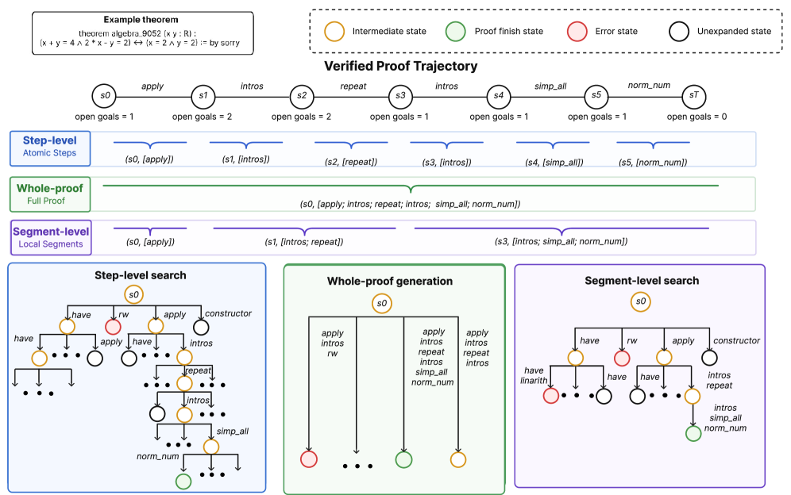
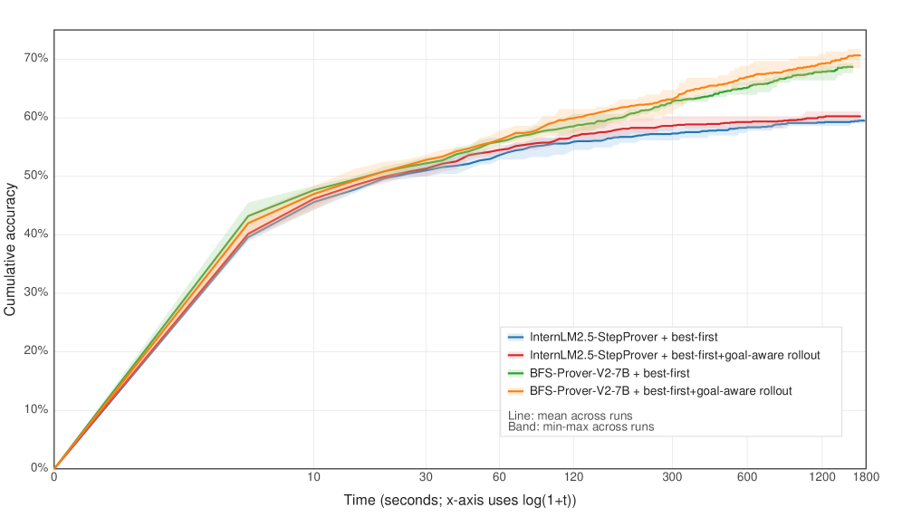

Proposes segment-level supervision for training LLM policy models on Lean 4 theorem proving, evaluated on miniF2F.
Abstract
Automated theorem proving with large language models in Lean 4 is commonly approached through either step-level tactic prediction with tree search or whole-proof generation. These two paradigms represent opposite granularities for constructing supervised training data: the former provides dense local signals but may fragment coherent proof processes, while the latter preserves global structure but requires complex end-to-end generation. In this paper, we revisit supervision granularity as a training set construction problem over proof trajectories and propose segment-level supervision, a training data construction strategy that extracts locally coherent proof segments for training policy models. We further reuse the same strategy at inference time to trigger short rollouts for existing step-level models. When trained with segment-level supervision on STP, LeanWorkbook, and NuminaMath-LEAN, the resulting policy models achieve proof success rates of 64.84%, 60.90%, and 66.31% on miniF2F, respectively, consistently outperforming both step-level and whole-proof baselines. Goal-aware rollout further improves existing step-level provers while reducing inference costs. It increases the proof success rate of BFS-Prover-V2-7B from 68.77% to 70.74% and that of InternLM2.5-StepProver from 59.59% to 60.33%, showing that appropriate supervision granularity better aligns model learning with proof structure and search. Code and models are available at https://github.com/NJUDeepEngine/SEG-ATP.
Problem
LLM-based theorem proving in Lean 4 uses either step-level tactic prediction (dense local signals, fragmented proof structure) or whole-proof generation (global structure, complex generation). Neither granularity aligns well with how proofs are naturally organized into locally coherent segments.
Approach
The authors propose segment-level supervision, a training data construction strategy that extracts locally coherent proof segments by placing boundaries at goal-count changes in proof trajectories. They also introduce goal-aware rollout, an inference-time strategy that triggers short multi-tactic rollouts for existing step-level models when the open-goal count drops. Models are fine-tuned from Qwen2.5-Math-7B on three Lean 4 datasets: STP, LeanWorkbook, and NuminaMath-LEAN.

Figure 1 : Illustration of supervision granularity on the problem algebra_9052 from NuminaMath-LEAN. For simplicity, proof states show only tactic transitions and open-goal counts, omitting premises. The same verified proof trajectory is organized into step-level, whole-proof, and segment-level supervision targets, together with their corresponding inference patterns.
Results
Segment-level models achieve 64.84%, 60.90%, and 66.31% proof success rates on miniF2F from STP, LeanWorkbook, and NuminaMath-LEAN respectively, consistently outperforming both step-level and whole-proof baselines. Goal-aware rollout improves BFS-Prover-V2-7B from 68.77% to 70.74% and InternLM2.5-StepProver from 59.59% to 60.33% without retraining.

Figure 6 : Cumulative accuracy over per-theorem elapsed time for goal-aware rollout on miniF2F. For each time cutoff t , cumulative accuracy is defined as the fraction of theorems solved within t seconds. All curves are computed from the same evaluation runs with a per-theorem timeout of 1800 seconds. The x-axis uses \log(1+t) for visualization. Lines denote the mean over five independent runs, an